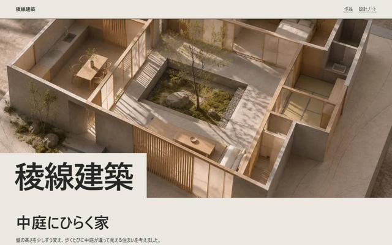
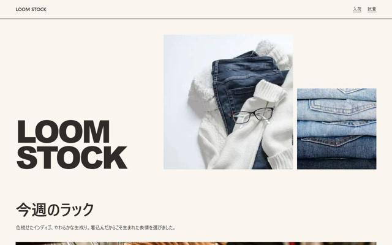
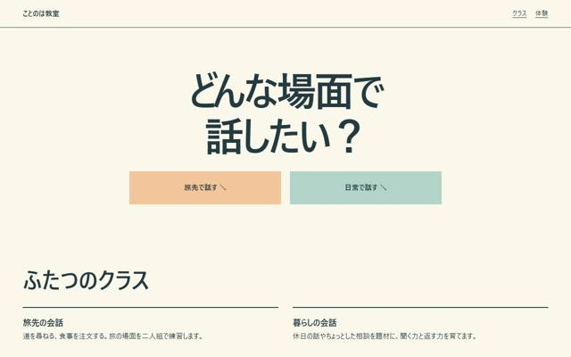
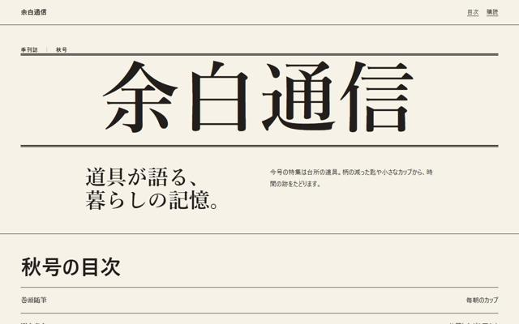
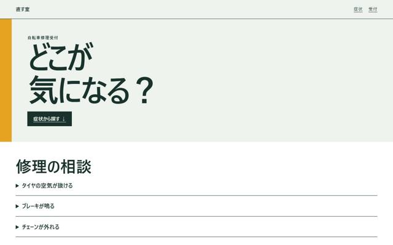
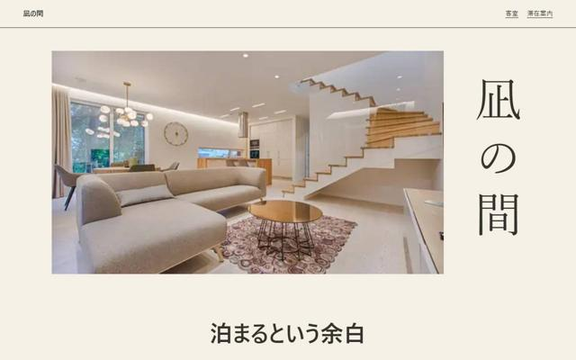
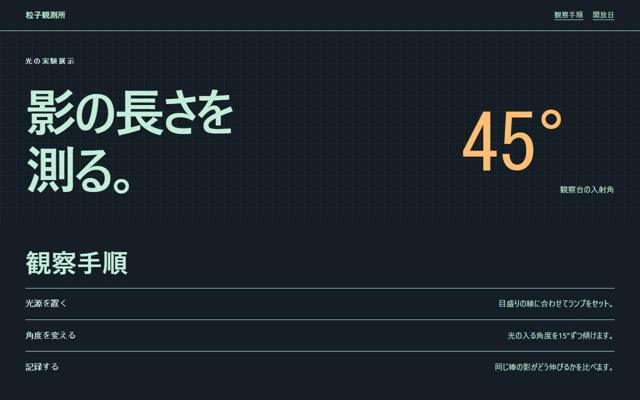

デザイン10選｜助手A制作室
 食堂
食堂
匙と皿
献立を最初に読むメニュー表 ↗

建築設計
稜線建築
大判写真から作品へ入る展示型 ↗
 電子音楽公演
電子音楽公演
PULSE HALL
タイポグラフィポスターと時刻表 ↗
 海辺の観光
海辺の観光
潮路を歩く
旅の順序をたどるルートガイド ↗

古着店
LOOM STOCK
写真の大小で見せるルックブック ↗

語学スクール
ことのは教室
学びたい目的から選ぶ分岐型 ↗

独立出版・雑誌
余白通信
大見出しと段組の新聞型 ↗

自転車修理
直す室
症状から答えを開く相談窓口 ↗

宿泊施設
凪の間
余白と一枚の室内写真で迎える宿案内 ↗

科学展示
粒子観測所
数値と実験記録を読む展示台帳 ↗